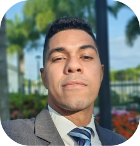

Raphael Carneiro WDD 130
Brazil
Hello! I'm Raphael. üòÅ I'm pursuing a bachelor's degree in Software Development at Brigham Young University - Idaho. I aim to become a more consistent code developer and to be able to tackle the challenges of the programming world for companies worldwide, without encountering technical or language barriers. At the moment, my expertise is primarily focused on frontend development, but I'm actively working towards feeling confident as a full-stack developer soon.
My professional journey thus far has been somewhat winding, yet it has consistently showcased my passion for technology. It all began back in high school when I simultaneously enrolled in and graduated from a technical course in electronics, later continuing on to become a technologist in systems analysis and development. Today, I realize that both my roles as an electronic security technician and as an IT analyst have equipped me with skills that greatly benefit my current career path, from soft skills like conflict resolution and active listening to technical abilities such as managing Linux servers, databases, and even experience with agile methodologies like Scrum.